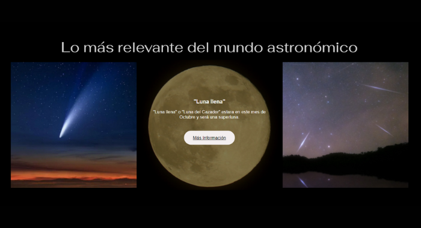
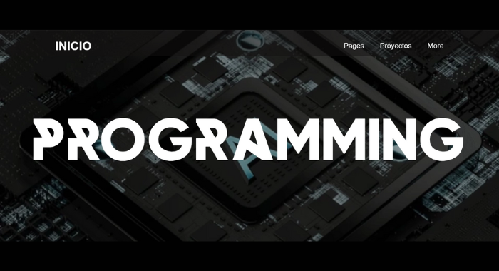
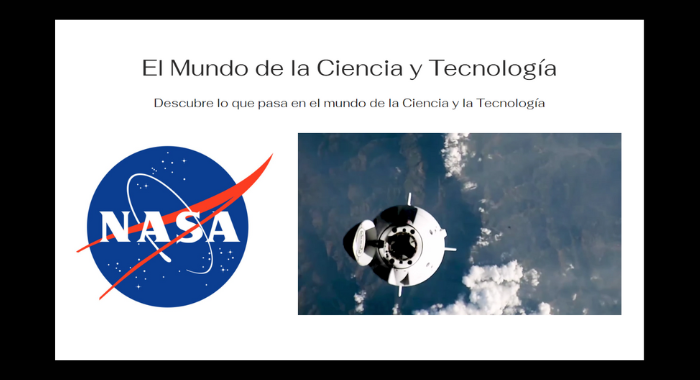

Diseños de Páginas Web
Desarrollar páginas web para diferentes marcas, productos y marcas personales. Esto con el fin de mostrar un contenido más amplio y mejor diseñado.



Desarrollar páginas web para diferentes marcas, productos y marcas personales. Esto con el fin de mostrar un contenido más amplio y mejor diseñado.